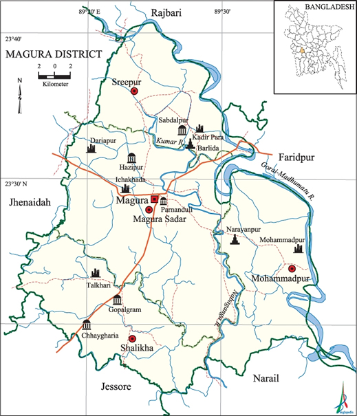

Which is located in Khulna Division
The road of jessore,dhaka,jhanidaho are join here.
This bridg is way of magura to jessore
This is south side of main point
Magura District (khulna division) area 1048.61 sq km, located in between 23°15' and 23°41' north latitudes and in between 89°15' and 89°42' east longitudes. It is bounded by rajbari district on the north, jessore and narail districts on the south, faridpur district on the east, jhenaidah district on the west.
Population Total 824311; male 420907, female 403404; Muslim 664937, Hindu 158685, Buddhist 342, Christian 21 and others 326.
Water bodies Main rivers: gorai-madhumati, Nabaganga, kumar.
Administration Magura sub-division was established in 1945 and it was turned into a district on 1 March 1984.
History of the War of Liberation Magura was under Sector 8 during the war of liberation. About 16 encounters were held between the freedom fighters and the Pak army in Magura district. The Pak army buried alive 6 freedom fighters at a place near Shatakhali Road on the Magura-Jessore highway. Besides, 7 freedom fighters were killed by the razakars at Talkhari.
Marks of the War of Liberation Mass grave 4 (Magura PTI compound, WAPDA Canal, Binodpur Bazar Ghat, Galakata Bridge at Chhaigharia;); memorial monument 1 (PTI main gate adjacent to the Magura Bishwa Road).
Literacy rate and educational institutions Average literacy 44.7%; male 49.2%, female 40.1%. Educational institutions: college 17, secondary school 115, primary school 370, satellite school 21, kindergarten 3, brac school 124, community school 134, madrasa 76. Noted educational institutions: Government Hossain Shahid Suhrawardi College (1940), Magura Government Boys' High School (1854), Nohata Rani Patit Pabani High School (1924), Gangarampur PK Secondary School (1900), Nakol Raicharan Secondary School (1901), Sreepur MC Pilot Secondary School (1902), Binodpur Basant Kumar Multilateral Secondary School (1904), Hazipur Secondary School (1914), Shatrujitpur Kaliprasanna Secondary School (1919), Dhuljora Chura Gati Pratapchandra Secondary School (1927), Shimakhali Primary School (1932), Bororia AW Senior Madrasa (1907), Nohata AG Fazil Madrasa (1921).
Main sources of income Agriculture 66.3%, non-agricultural labourer 2.65%, industry 1.29%, commerce 12.34%, transport and communication 3.59%, service 7.85%, construction 1.34%, religious service 0.14%, rent and remittance 0.43% and others 4.07%.
Newspapers and periodicals Daily: Khedmat; weekly: Angikar, Grameen Bangla.
Folk culture Jarigan, Sarigan, Bhatiali, Kavigan, Haloigan, Jatra, Pala are notable. [Abu Naser Majnu]
See also The upazilas under this district.
References Bangladesh Population Census 2001, Bangladesh Bureau of Statistics; Cultural survey report of Magura District 2007; Cultural survey report of upazilas of Magura District 2007.
| Name of Upazila | Area (sq km) | Union | Mouza | Village | Population | Density (per sq km | Literacy rate (%) |
|---|---|---|---|---|---|---|---|
| Magura Sadar | 406.50 | 13 | 222 | 236 | 331494 | 815 | 45.8 |
| Mohammadpur | 234.29 | 8 | 132 | 183 | 188753 | 806 | 44.5 |
| Shalikha | 228.34 | 7 | 100 | 118 | 147663 | 646 | 44.0 |
| Sreepur | 179.18 | 8 | 83 | 163 | 156401 | 873 | 43.5 |
Find him on:
Next page for more information